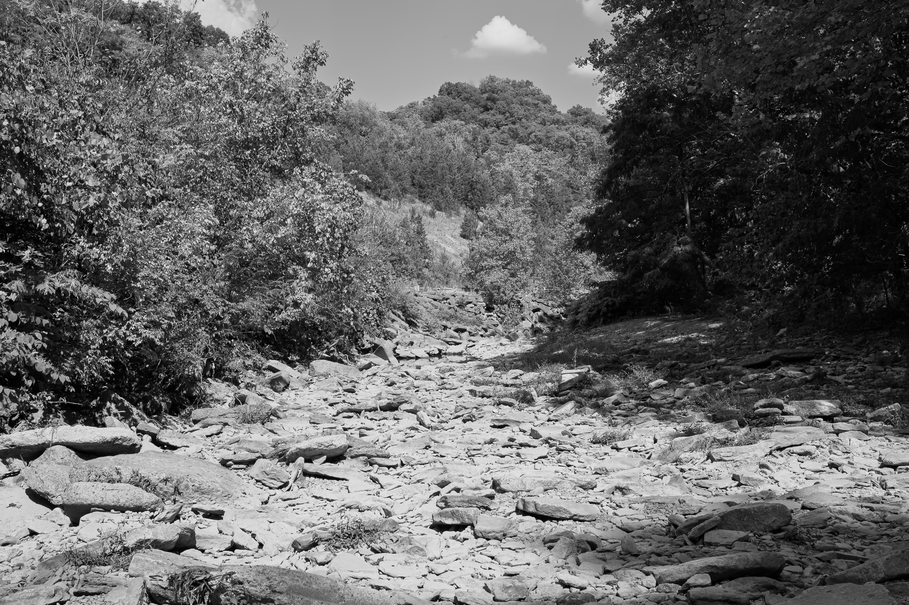
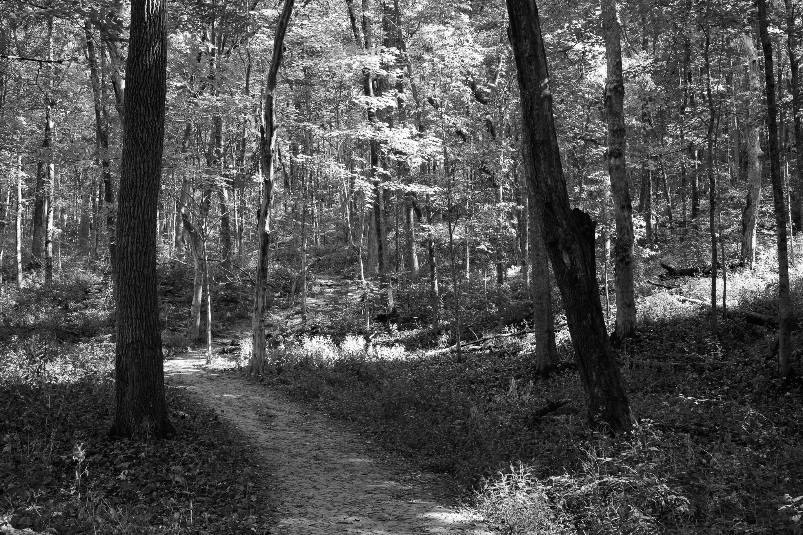
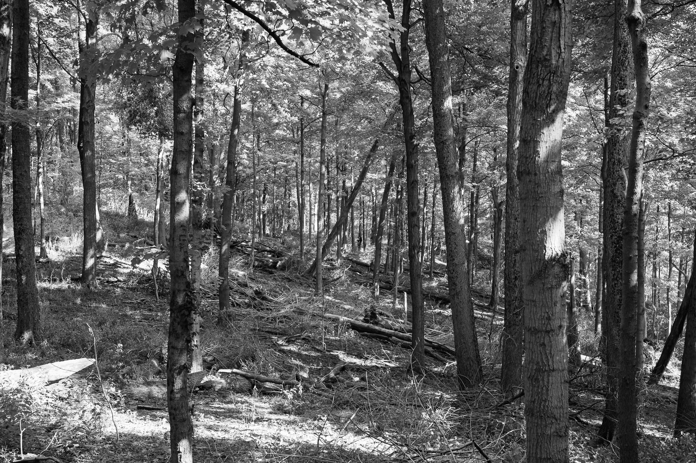
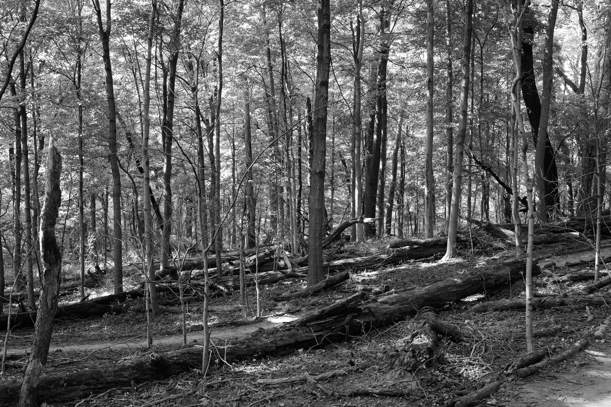
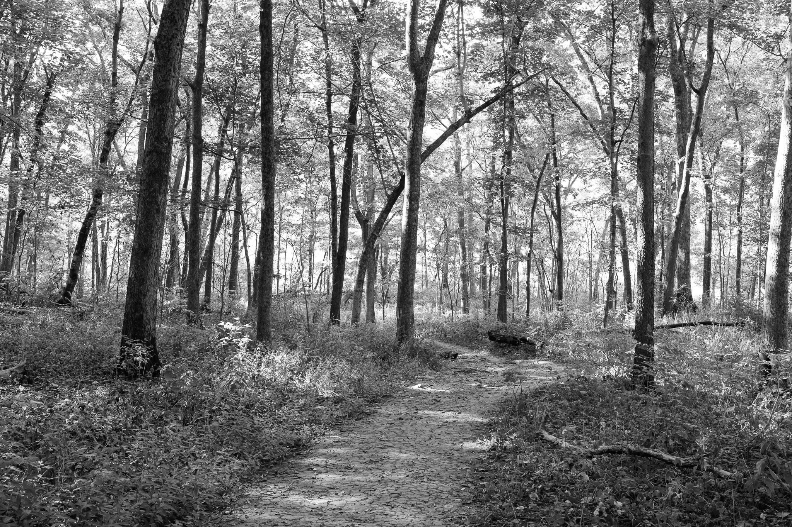
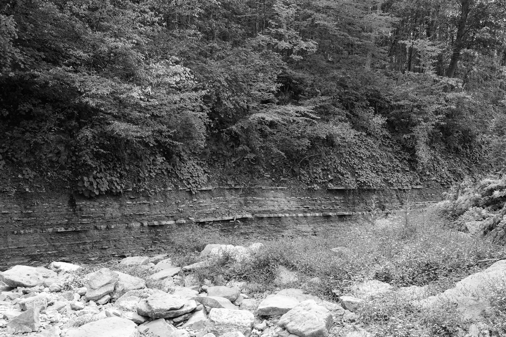

Public Lands Institute
Index
Archive
Bender Mountain Nature Preserve
OH

Bender Mountain Nature Preserve I · 2025-09-15
_DSC0346.jpg

Bender Mountain Nature Preserve II · 2025-09-15
_DSC0348.jpg

Bender Mountain Nature Preserve III · 2025-09-15
_DSC0358.jpg

Bender Mountain Nature Preserve IV · 2025-09-15
_DSC0359.jpg

Bender Mountain Nature Preserve V · 2025-09-15
_DSC0366.jpg

Bender Mountain Nature Preserve VI · 2025-09-15
_DSC0368.jpg
View all 6 images
← Otto Armleder Memorial Park